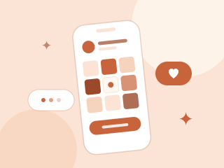
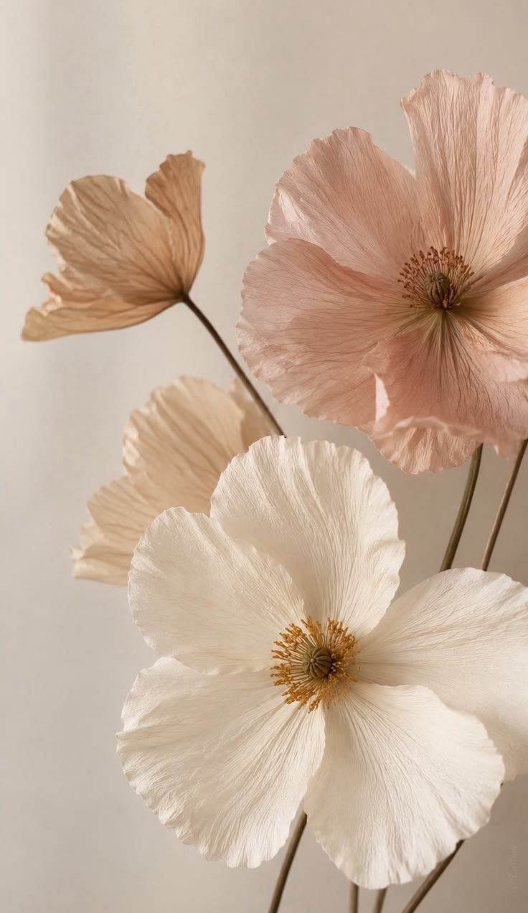
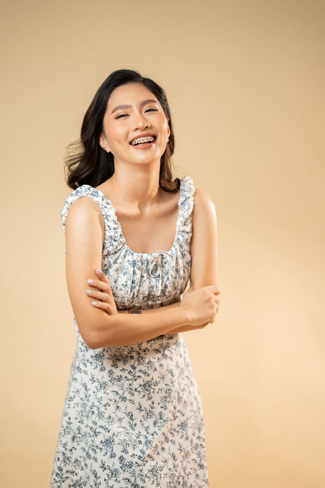

Social Media Management
Planning, posting, and engaging with your community, so you stay consistent without burning out.

Hi, I'm Jessa social media & writing support
I help therapists, coaches, and new business owners show up online with confidence, without the overwhelm.

content · community
& clarity
Sound familiar?
Breathe. We'll figure it out together
Seen just now
Hello, nice to meet you
What to post, how often, who to talk to. I'm Jessa, a social media manager who runs day-to-day content, engagement, and monthly reporting for established creators.
Now I'm here to help you build the same steady, warm presence for your own business.
How I help
Each is shaped around your time, your voice, and your goals.

Planning, posting, and engaging with your community, so you stay consistent without burning out.
Whether it's a newsletter, a blog, or content for your socials, I help you get your words written, polished, and in front of the right readers.
Clear monthly insights on what's working and what to try next, in plain language.
Who I work with
I love supporting therapists, fitness coaches, wellness practitioners, and other coaches who want their online presence to feel as genuine as their work.
Many of my clients find me through creators and coaches I've worked alongside. I'm grateful for every introduction, and I treat every business like it's my own.
How it works
No complicated onboarding. Here's how we go from a first hello to a steady, warm presence online.
Ready for step one?
Book a free intro callStep 1
Free intro callTell me about your business and your goals.
Step 2
Tailored to youA simple, realistic approach that fits your time and budget.
Step 3
Ongoing supportYou focus on your clients while I help you grow your presence.
About me
I'm a social media manager based in the Philippines. Day to day, I run social media, engage with communities, and prepare monthly analytics and engagement reports, including promotion for newsletters on Substack.
I love to help. If you're just starting out online, you're in the right place.
Work with me
Let's chat about what you need. No pressure, just a friendly first conversation.